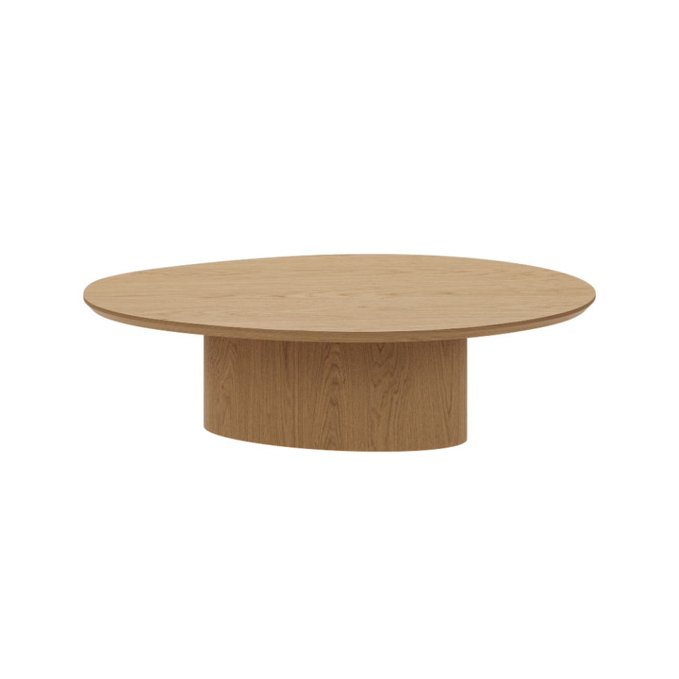

FURNITURE MATCHING · DESIGN SEELINE
가구매칭
내 공간에 어울리는
가구의 조합.
소파의 크기, 테이블의 높이, 그 사이의 여백.
가구와 공간의 관계를 함께 살펴봅니다.
A STUDY IN BALANCE / 01

곡선으로 이어지는 거실잉크 소파 × 잉크 소파 테이블 · 제품 조합 예시
- 01공간과 조합 살피기
우리 집에 어울리는 방향을 찾아보세요.
- 02제품별 크기 확인하기
치수가 등록된 제품은 배치해볼 수 있어요.
- 03내 조합으로 상담하기
담아둔 가구를 바탕으로 함께 다듬어요.
01 / FIND YOUR COMBINATION
어떤 공간을 바꾸고 싶으세요?
소재와 형태가 이어지는
가구 조합부터 살펴보세요.
디자인시선이 제안하는 조합입니다. 실제 공간의 크기·색상·동선에 맞춰 상담에서 구성을 다듬습니다.
02 / MAKE IT YOURS
내 조합에 더할 가구
사진을 누르면 상세 정보를 확인할 수 있어요.
‘배치 가능’ 제품은 치수 또는 집 사진으로 미리보기.
크기·예산으로 좁혀보기
등록된 규격·참고 가격이 있는 제품에 적용됩니다. 소파는 등록된 구성 중 하나라도 폭 조건에 맞으면 표시하며, 최종 옵션·가격은 상품 상세에서 확인해 주세요.
사진 → 상세 → 제품별 배치
배치 미리보기는 제품 한 개씩 확인하는 간략 모델입니다. 함께 배치했을 때의 동선과 조화는 상담에서 살펴봅니다.
03 / YOUR COMBINATION
내가 담은 가구 조합
마음에 드는 가구를 모으면
상담을 시작할 기준이 됩니다.
우리 집 이야기를 더해 주세요.
공간 크기와 원하는 분위기를 적어두면
가구의 비례와 동선을 함께 살펴볼 수 있어요.
복사한 내용을 상담 신청폼의 요청 사항에 붙여넣어 주세요. 목록은 이 브라우저에 저장되며 신청폼에 자동 전송되지 않습니다.